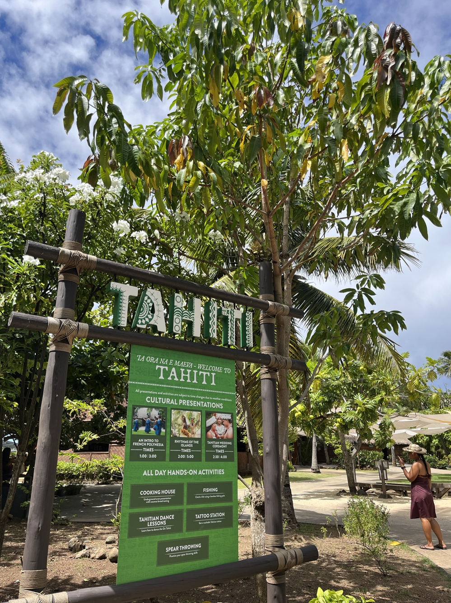

"Tahiti"
The greeting word: "Ia Ora Na"This island is called romantic island. Their main focus is to show how Tahitian people love and marry. My favirite show is their Wedding. The interesting thing about their wedding ceremony is instead of saying "Yes or I do", your answer should be "NO". Let me explain a little bit, the reason is the priest asks "Will you ever leave your partner in hard times?". This is the reason why your answer should be "No"or in Tahitian "E'Ita"
